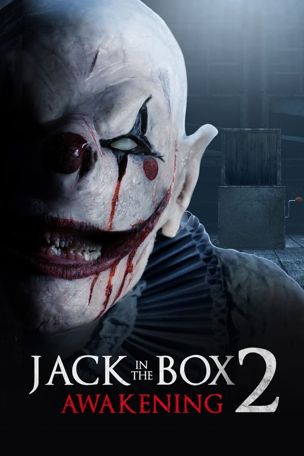

IT: CAPÍTULO II
Vinte e sete anos após o Clube dos Otários derrotar Pennywise, It está de volta. Agora adultos Os Otários seguiram com suas vidas, mas com os recentes desaparecimentos em Derry, Mike resolve reunir o grupo novamente. Perturbados pelo passado, eles precisam vencer seus medos para destruir Pennywise, que está ainda mais perigoso, de uma vez por todas.

